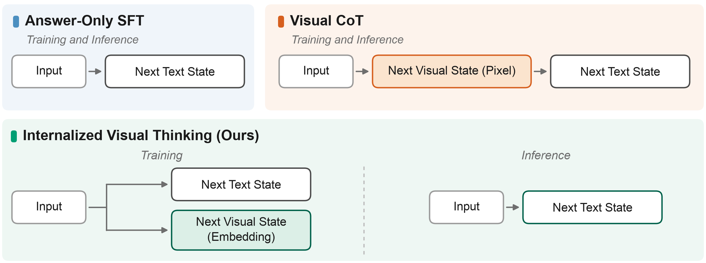

第一遍：先把帖子、博客与论文讲完整
Arnab Mondal 是这篇论文的共同作者。他在 2026 年 8 月 18 日的帖子里把工作概括为一种比显式视觉思维链更强、更快的主动视频推理方案，并链接到第一作者 Xiaoyu Zhu 的技术博客。Xiaoyu 的发布帖把问题说得更直接：模型能不能在训练时学会“视觉地思考”，却在推理时不生成这些视觉思考？这不是一般的视频问答，而是要求模型在证据还没有完全出现时提前判断。
主动视频推理：答案必须在事件结束前到达
论文区分两类任务。Early-event prediction（EEP） 是动作已经开始，但只看到动作进度的 10%、30%、50% 或 70%，模型要提前认出“正在发生什么”。例如一只手刚拿起杯子、尚未完成倾倒，模型就要识别动作。Next-event prediction（NEP） 更难：目标动作还没开始，观察至少在下一事件前一秒结束，模型必须根据物体、运动、手与物体关系以及场景意图猜“接下来会发生什么”。
因此，延迟不是附属指标。如果一个模型花六秒生成中间图像，而要预判的动作两秒后就发生，再准确的答案也失去主动价值。作者真正要优化的是质量—时延前沿，不是单独追求文本分数。
为什么显式 Visual CoT 既有用又昂贵
作者采用 Zebra-CoT 风格的预测式视觉思维链作为对照：先根据已观察视频生成一张未来帧，再用视觉编码器把这张图重新编码成 token，最后生成文字答案。它的直觉很合理——位置、接触、朝向和物体状态很难用短文本完整表达，一张未来图可以同时保存这些信息。但它把一个密集图像生成任务塞进每次请求，还会把错误的“想象图”重新喂给答案分支。
论文用一个 oracle 实验把“未来视觉信息是否有价值”和“模型能否把未来画对”拆开：不让模型生成未来帧，直接把真实未来帧送给相同 checkpoint。结果真实未来帧在 EEP 与 NEP 的所有指标上都明显更好；自生成未来帧只在 EEP 稳定有益，在 NEP 的 ROUGE-L、BERTScore、CIDEr 上反而略差于直接回答。作者由此判断：问题不在于未来视觉上下文无用，而在于把它外化为像素既慢又不够可靠。

IVT 的转向：不画未来，只让答案表征必须包含未来
Internalized Visual Thinking（IVT）的输入仍是部分视频和文字提示。训练时，同一个模型同时做两件事：一条分支预测文本答案；另一条分支预测观测边界之后若干未来帧的潜表示。未来帧经过固定或可适配的目标编码器变成 latent tokens，预测分支只需逼近这些 token，不必真的解码出图片。两类损失共同更新共享模型，使“用于回答的内部状态”也承受预测视觉变化的约束。
推理时，未来预测位置、目标编码器和图像解码步骤全部移除，模型只执行“部分视频 → 文字答案”。所以 IVT 的价值不是在测试时做了一个更便宜的 latent rollout；它根本不 rollout，而是把 world-modeling 当成训练时表征约束。这一点与仍在测试时迭代 latent state 的方法不同。
作者逐项寻找真正有效的训练配方
第一，目标表示很重要。作者比较 Flux-VAE、DINOv2、可适配 SigLIP2 和冻结 SigLIP2。最稳定的不是最“语义化”的特征，而是保留外观与空间细节、面向重建的 Flux-VAE latent；DINOv2 也有帮助，但弱一些。作者博客还报告 V-JEPA 2.1 特征没有得到清晰提升，不过这项负结果尚未写入当前 arXiv v1。
第二，预测任务不能只当偶尔出现的 regularizer。理解样本与预测样本按 3:1、5:1 混合时，文本任务早期进步更快，却在 12k–18k 步附近停滞；1:1 的平衡配比起步较慢，20k 步时四项指标最好。这说明下游答案监督会覆盖预测信号，必须持续给后者足够更新。
第三，目标表示与损失要一起选。DINOv2 用直接回归显著优于 rectified flow；Flux-VAE 上两者差距较小。虽然 BAGEL 原本在 VAE 空间用 flow 做图像生成，但“原生成模型怎样训练”并不自动等于“怎样把未来信息迁移给 reasoner 最好”。
第四，先学预测、再只做文本微调的两阶段课程失败了。它在四项指标上甚至低于从未学习预测的 Answer-Only SFT；持续联合训练则全部领先。作者据此强调，收益不是一次性预训练带来的初始化红利，而是两个目标在整个后训练阶段保持耦合。
第五，共享程度与预测跨度互相作用。Dense 让理解 token 与预测 token 共用 decoder，短跨度 (H=1,2) 时转移最强；MoE 为两类 token 使用不同 FFN expert，短跨度峰值较低，但随着未来帧数量增加更稳定。作者的解释是：近未来较确定，共享梯度直接塑造语言表征有利；未来越远、分支越多，不确定的预测信号越可能污染答案路径，部分隔离反而更稳。
主结果、迁移结果与作者自己的限制
主实验在 Ego-Exo4D、Ego4D 和 EPIC-KITCHENS-100 上分别做 EEP 与 NEP，共六个设置。模型从 BAGEL 系列初始化，训练 20k 步；EEP 用 top-1，NEP 用 top-5，评价 ROUGE-L、BERTScore、METEOR 与 CIDEr。相对于 matched Answer-Only SFT，IVT 在六个设置的四项指标上全部提高；相对于 Visual CoT，IVT 在四个设置领先，尤其赢下全部三个 NEP 设置。Visual CoT 仍在 Ego4D 和 EPIC-KITCHENS-100 的 EEP 上更强，说明显式生成在已经开始、近未来较可预测的动作上没有被完全取代。
延迟测试使用单张 NVIDIA B200、bf16、batch size 1，每个设置 200 个样本。六个设置平均下来，Answer-Only SFT 为 1.20 秒，IVT 为 1.22 秒，Visual CoT 为 6.56 秒；P95 分别约 1.92、1.77 和 7.92 秒。附录还把在 Ego-Exo4D 上训练的模型零微调迁移到 Charades：Dense IVT 得到 73.2% accuracy，高于 Answer-Only 的 71.7%、MoE IVT 的 71.9% 和 Visual CoT 的 58.2%，提供了一条有限但有价值的分布外证据。
作者没有把结论扩展到所有视觉推理。博客明确承认：一个确定 latent 很难覆盖多个合理未来；更远的未来依赖目标、程序、记忆和世界知识；三跳未来实验没有看到 IVT 相对 answer-only 的清晰收益。论文也只在 BAGEL 系列做受控主比较，并承认更强基座是否仍受益尚待验证。作者最后提出一个连续谱：简单样本完全不 rollout，困难样本只做少量压缩 latent rollout，而不是每次都生成完整像素图。
以上是材料自身的论证顺序与作者结论。下面开始本文的证据审计和独立判断。
第二遍：核心判断
IVT 最可信的新意不是“模型学会了像人一样在脑中看图”，而是证明了一条实用的 amortization 路线：把每次请求都要支付的像素级未来生成，改成训练阶段一次性支付的预测表征约束；在短时域视频预判上，这能保住未来信息的大部分收益，同时消除约 5.4 倍的推理时延。
真正贡献
对 Visual CoT 做 oracle 诊断，并系统搜索 target、loss、配比、课程、架构与 horizon 的耦合条件。
不是新发明的部分
next-embedding prediction、JEPA、VAE latent、联合辅助损失、Dense/MoE 都有前史；新意在主动视频推理中的组合和受控比较。
最大未决问题
没有公开代码、训练成本和多 seed 方差；长时域失败，强基座、真实流式系统与多未来校准尚未验证。
机制与公式：梯度如何把“未来”压进回答路径
设 (X_{\le t}=(I_1,\ldots,I_t)) 为看到的部分视频，(q) 为提示，(y=(y_1,\ldots,y_T)) 为文字答案。普通 SFT 只优化答案 token 的负对数似然：
IVT 额外选取未来偏移集合 (\mathcal H\)。目标编码器把未来帧 (I_{t+h}) 编成 (Z_h\in\mathbb{R}^{M\times d})，模型从当前上下文预测 (\widehat Z_h)。最直观的直接回归损失是：
其中 (\operatorname{sg}) 表示 stop-gradient，论文固定 (\lambda_{\text{pred}}=1)。关键不是多了一个 head，而是预测 hidden states 来自同一个 MLLM；在 Dense 方案中，两类损失直接改写同一 decoder。若模型只靠语言先验猜动作，却没有保留手—物体状态与近未来动力学，预测 latent 的误差会迫使它修正内部表示。
训练损失只能证明内部状态更适合同时预测答案和未来表征，不能证明模型拥有忠实、可解释或人类式的视觉想象。这里的“思考”应读成任务有用的表示学习约束，而不是心智机制声明。
关键实验：哪些数字最能改变判断
1. Oracle 实验先证明问题在生成器，不在未来信息
| 任务 | 方案 | 平均延迟 | ROUGE-L | METEOR | CIDEr |
|---|---|---|---|---|---|
| EEP | Answer-Only | 1.07 s | 34.4 | 24.3 | 1.43 |
| EEP | 生成 Visual CoT | 6.56 s | 36.4 | 29.8 | 1.69 |
| EEP | 真实未来帧 oracle | 不适用 | 41.9 | 34.2 | 2.05 |
| NEP | Answer-Only | 1.32 s | 47.2 | 35.3 | 2.14 |
| NEP | 生成 Visual CoT | 6.55 s | 46.8 | 36.9 | 2.13 |
| NEP | 真实未来帧 oracle | 不适用 | 50.4 | 40.4 | 2.38 |
这是论文最强的因果诊断。若 oracle 也无效，就没有理由做 future-state supervision；但 oracle 显著领先，说明未来视觉状态确实包含任务信息。生成 Visual CoT 与 oracle 之间的差距则把改进空间定位到“未来帧 fidelity + 推理成本”。
2. 六个主设置的 ROUGE-L
| 数据集 / 任务 | Answer-Only | Visual CoT | 最佳 IVT | 谁领先 |
|---|---|---|---|---|
| Ego-Exo4D / EEP | 28.8 | 32.7 | 33.3 | IVT |
| Ego4D / EEP | 33.3 | 36.1 | 34.8 | Visual CoT |
| EPIC-KITCHENS-100 / EEP | 36.5 | 40.2 | 39.0 | Visual CoT |
| Ego-Exo4D / NEP | 46.3 | 42.6 | 48.5 | IVT |
| Ego4D / NEP | 51.9 | 52.2 | 52.7 | IVT |
| EPIC-KITCHENS-100 / NEP | 45.5 | 42.8 | 49.1 | IVT |
论文正文给出的“NEP 平均 ROUGE-L 从 45.9 升到 49.7”使用 Dense IVT 的三项平均；若每个数据集都选 Dense/MoE 中较高者，则是约 50.1。两种算法都合理，但不能混成同一个口径：前者是固定架构平均，后者是 per-dataset best-of-two。
3. 独立复算延迟
附录六行延迟的算术平均为 Answer-Only 1.195 秒、Visual CoT 6.560 秒、IVT 1.223 秒。因此 Visual CoT 相对 IVT 是约 (6.560/1.223=5.36\times)，相对 Answer-Only 是约 (5.49\times)。这支持“超过五倍”的 headline claim；IVT 相对 Answer-Only 只慢约 2.4%，在该硬件与协议下可视为同一量级。
4. 失败消融比最好结果更有工程价值
两阶段会遗忘
先预测 10k、再文本 20k：ROUGE-L 28.6，低于 Answer-Only 的 30.6；联合训练达到 34.5。预测能力必须与回答持续共适配。
更语义不一定更可用
Flux-VAE latent 胜过 DINOv2/SigLIP2；博客称 V-JEPA 2.1 也未清晰改善。任务需要的可能是局部状态变化，而非全局语义不变性。
预测太少会被覆盖
3:1 与 5:1 早期领先却后期停滞，1:1 最终最好。辅助目标的有效权重由 loss 系数和数据频率共同决定。
未来越远越多模态
Dense 在短跨度更强，MoE 随跨度增加更平；three-hop 没有清晰收益。局部动力学和长期意图不是同一种预测问题。
术语对齐
证据审计：结论有多强
| 主张 | 证据状态 | 限制 |
|---|---|---|
| IVT 在六个设置都优于 matched Answer-Only | 论文完整验证集表格直接支持，四项指标方向一致。 | 作者报告；未见多 seed 方差、显著性检验或独立复现。 |
| IVT 推理比 Visual CoT 快 5 倍以上 | 附录逐数据集延迟可独立复算为约 5.36 倍。 | 单张 B200、batch 1；视频帧加载、模型加载、编译和首个 warm-up 不计时，不能直接外推到所有部署栈。 |
| IVT 是通用 SOTA 视频推理方案 | 证据不足。 | 外部基线不是严格受控；更大的 Qwen3-VL-8B 多数设置更强。论文也只声称在 7B 级有竞争力。 |
| 可以从无标签视频免费获得收益 | 机制上预测未来帧不需要文本标签。 | 主实验仍在有原生标注的数据集上联合训练，没有展示额外海量无标签视频带来的 scaling 曲线。“无标签”描述不应读成已证明的 web-scale 免费增益。 |
| V-JEPA 2.1 target 和 three-hop 失败 | 作者博客补充。 | 当前 arXiv v1 正文/附录没有对应表格或协议细节，应视为发布方报告，不是论文内完整实验。 |
| 方法已可复现 | 尚不成立。 | 论文给出算法和超参数，但公开页面当前没有 IVT 代码、checkpoint、训练日志或关联模型/数据集。 |
主表使用完整验证集，样本量可观；但若干关键消融只在随机抽取的 200 个 Ego-Exo4D EEP 样本上评估，而且论文没有报告重复采样、置信区间或 seed 方差。因此“方向一致”可以信，“某个配置高 0.5–1 分”则不宜过度解释。
IVT 在训练时增加目标编码、预测 token 与一半预测样本配额，但论文没有报告训练 FLOPs、吞吐或能耗。对高调用量服务，把成本从每次推理搬到一次训练通常很划算；对小数据、小流量或频繁重训场景，是否划算还需要算完整生命周期账。
独立 insight：这其实是一种“训练时编译”
这项工作的最佳类比不是“模型在脑中看见未来”，而是把一个昂贵运行时程序编译进参数。Visual CoT 每次请求都执行：生成未来 → 解码像素 → 重编码 → 回答。IVT 在训练时用真实未来状态监督，把反复出现的局部动力学压进共享表征，部署时只执行已经编译过的直接路径。这与蒸馏、amortized inference 和 privileged-information training 属于同一个更大设计族：训练可以访问更丰富、更昂贵或未来才知道的信号，推理只保留便宜策略。
这个视角解释了为什么两阶段训练失败：若“编译”完成后又只用文本目标覆盖 20k 步，参数会回到更便宜的语言捷径。它也解释了为何 Dense 在短时域强、长时域变差：共享参数是强制编译的通道，但当未来分布分叉，单一真实未来提供的梯度会把多种合理可能性压成一次偶然轨迹，强耦合就从归纳偏置变成噪声。
由此可以推出一个比原文更具体的后续方向：预测目标应由决策充分性而不是重建或语义标签来选择。Flux-VAE 胜出说明局部几何和物体状态很重要，但它仍包含大量与动作无关的纹理。更好的 target 可能是手—物体接触图、对象状态、光流、动作可供性或多假设 latent set；评价也应从文本相似度转向“预测是否足以提前采取正确动作”。
适合使用
近未来动作、机器人安全预警、驾驶风险、流式助手等高频、低延迟且局部动力学强的场景。
谨慎使用
长时规划、多人意图、开放世界事件；当前画面不足以决定未来，单目标回归会奖励偶然 continuation。
下一项关键实验
相同推理预算下比较：无 rollout、按不确定性触发的短 latent rollout、完整 Visual CoT，并同时报告训练总成本与校准误差。
这也与站内此前分析的显式视觉 world model形成互补：那项工作说明在复杂空间/物理任务里，生成中间视觉状态有时比语言更自然；IVT 则说明在短时域、重复模式、延迟敏感的任务上，中间视觉状态未必需要在每次推理时显式出现。两者不是互相否定，而是在划定何时外化、何时内化的边界。
什么证据会推翻当前判断
- 在公开代码的多 seed 复现中，IVT 相对 Answer-Only 的提升消失，或关键消融对随机 200 样本极度敏感。
- 把 Visual CoT 换成更快、更高 fidelity 的生成器后，在相同端到端时延预算内稳定超过 IVT，说明当前优势主要来自基线生成器不足。
- 更强基座已经自发编码近未来动力学，加入 IVT 后收益趋近于零或损害通用能力，说明它更像弱基座的后训练补丁。
- 真实流式系统中，视频采集、编码和网络延迟主导总时延，使 1.22 秒与 6.56 秒的模型差异不再决定产品响应。
- 多标注者、多合理未来和决策效用指标显示，词面指标提升并未改善校准、可用性或提前行动成功率。
证据边界与资料索引
本文完整核对主帖、第一作者发布帖、作者技术博客、arXiv v1 正文与附录，并沿核心方法核对 V-JEPA 2、Zebra-CoT 与 BAGEL 的原始论文页面。X 回复串可能随平台访问状态变化；当前可稳定核验的是发布首帖与其公开外链。论文数字属于作者报告，本文只做了表格口径和算术复算，没有完成训练复现。博客中未进入 arXiv v1 的补充实验已单独降级标注。